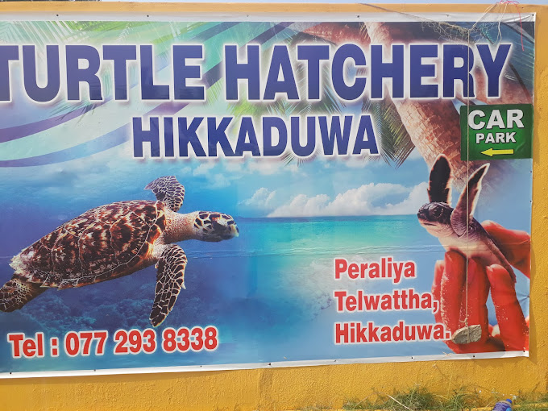

Hikkaduwa Turtle Hatchery (Sri Lanka)
About 2 km north of Hikkaduwa, on the beach, is a place called Turtle Hatchery. The hatchery is a tiny, private research facility that works to preserve marine turtle species that are in danger of extinction. It provides a selected exhibition of turtle eggs and shows how turtles mature over time. There are some locations where, for an additional cost, you can also get the chance to release newborn turtles into the huge ocean. The months of March through April are the finest for visiting and viewing the turtles.
